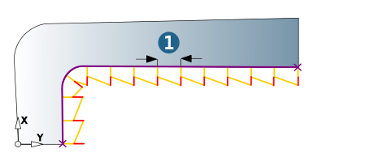
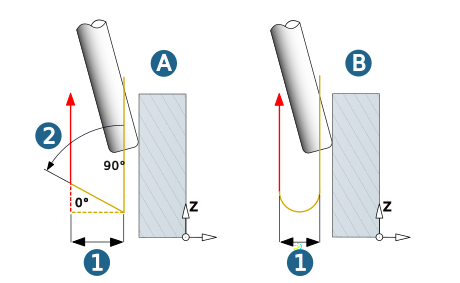

Parameters
Define machining parameters.
Tool position
Automatic: The contour direction is automatically adjusted in such a way that machining is always performed using climb milling.
Left, Right: The tool moves to the right/left of the contour. Machining with path compensation.
Allowance
Allowance: The Allowance parameter only applies for the Z-direction.
Infeed
Oneway: Machining always in the same orientation.
Zigzag: Machining with alternating orientation.
Zag feedrate (factor): Factor influencing the feedrate of the opposite direction. If climb milling is chosen as cutting mode, the opposite direction feedrate, i.e. the conventional milling feedrate, is reduced by the specified factor. The 0.8 factor means a feedrate reduction of 20%.
Lateral infeed area
Constant side stepover (1): Constant infeed in the XY plane over the entire contour.
|  |
Retract movement
The retract movement is performed in a linear (A) or circular (B) manner.
Retract distance: (1) Distance of the retract movement from the plunging movement
Axial retract angle: (2) Angle of the retract movement. Permissible values are between 0 and 90°. Only available for linear retract movements.
|  |
Retract mode
The retract mode defines the Z level where the system executes horizontal infeed movements. The mode set is valid for all machining directions (incl. approach, retract and return movement macros) and for the profiles machined with them. Exception: Machining in zigzag mode without return macro.
Clearance distance (1): all retract and infeed movements are executed via the clearance distance. Starting and end positions of an infeed movement in rapid are displaced in Z direction in order to guarantee a collision-free linear infeed movement. The clearance distance is added to these positions.
Clearance plane (2): all retract and infeed movements are executed via the clearance plane.
 |
Safety
Clearance plane and clearance distance apply in the direction of the Z axis of the current frame.
 |
Clearance plane (1): Plane for rapid tool movements. Specification in absolute dimensions Define the clearance plane by right-clicking on the icon. Select a point and confirm the selection. |
Warning
Traversing movements on the clearance plane are not checked with regard to collisions. Therefore, this plane must be placed at a sufficient distance above the surface of the workpiece.
Clearance distance (2): Distance to the current toolpath to be milled. Above the clearance distance, infeed takes place as rapid in the Z direction (A); below the clearance distance infeed takes place at the Z feedrate (B).
(3) Top, (4) Bottom
 |